Gallery
71 shots and 17 clips from the build, newest first. Select one to see it full size.

What broke on the left, the rule it turned into on the right.
Eight rules the crew wrote for itself on day one Day 1, hour 14
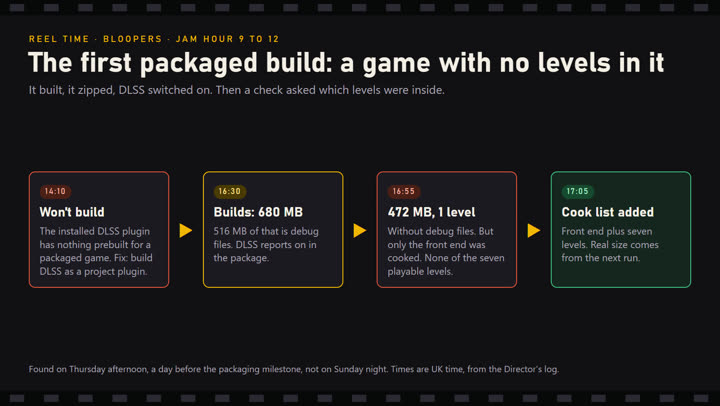
Four steps from "won't build" to a fixed cook list, in under three hours.
The first packaged build had no levels in it Day 1, hour 14

Dead Mile Motel, take one. Walk in to the pumps, two zombies walk up, and the machete drops them both. 'Yes! That's the stuff!' is the Director.
The gas station gets dressed, and the machete gets its first kills on film Day 1, hour 13

Before: The same spot at 12:25 and at 17:30. Boxes became pumps, a canopy, a wrecked sedan, a tanker, a fence and a diner.
The gas station gets dressed, and the machete gets its first kills on film Day 1, hour 13

After: The same spot at 12:25 and at 17:30. Boxes became pumps, a canopy, a wrecked sedan, a tanker, a fence and a diner.
The gas station gets dressed, and the machete gets its first kills on film Day 1, hour 13

Two zombies at the pump, a swing in progress. These are the scripted bodies from this afternoon.
The gas station gets dressed, and the machete gets its first kills on film Day 1, hour 13
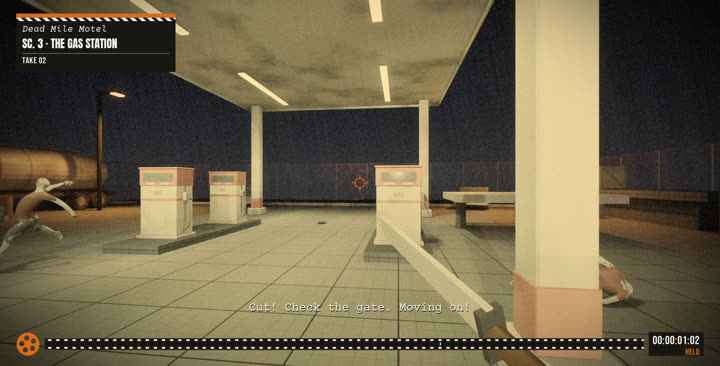
Take two. A zombie ragdolls off to the left, past the tanker. The subtitle is the Director moving on.
The gas station gets dressed, and the machete gets its first kills on film Day 1, hour 13

Saucers Over Millbrook. Three shots from the ray gun, then the player stops, and the bolts hang in the street. The HUD's bottom right corner flips between HELD and ROLLING.
Bullets you can watch: the ray gun and the revolver in slow time Day 1, hour 13
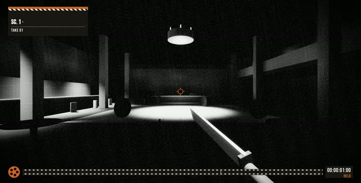
The noir club in black and white. The revolver's rounds show as bright streaks, and the HUD reads ROLLING ×0.16: the world at about a sixth of full speed.
Bullets you can watch: the ray gun and the revolver in slow time Day 1, hour 13

Two green bolts in mid-air, 1 second 17 frames into the take. The ammo counter reads 21 of 24.
Bullets you can watch: the ray gun and the revolver in slow time Day 1, hour 13

The revolver, three rounds left, one in the air on the right.
Bullets you can watch: the ray gun and the revolver in slow time Day 1, hour 13

The player hits the mark, the Director says 'Right on the X. Good.', and the screen cuts to DIRECTOR'S CUT: the take played back from two cameras, with a REC timecode and a skip prompt.
The Director's Cut: the replay finally shows up on film Day 1, hour 12
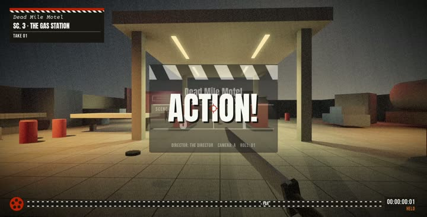
71 seconds, nothing cut: slate, walk in, two swings, CUT, take two slate, scene cleared, the mark, the replay, dailies, and the countdown leader into the next scene.
The Director's Cut: the replay finally shows up on film Day 1, hour 12
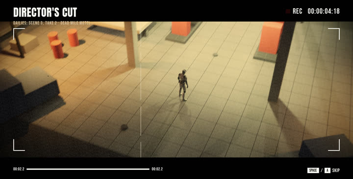
The second replay camera, a high crane shot over the forecourt. Frame corners, REC light and timecode are the UI session's replay overlay.
The Director's Cut: the replay finally shows up on film Day 1, hour 12
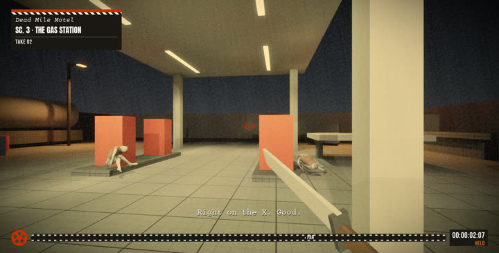
Hitting the mark. Two zombies down by the pumps, and the Director's line at the bottom.
The Director's Cut: the replay finally shows up on film Day 1, hour 12

Take two now gets its own slate. That was missing at 13:30.
The Director's Cut: the replay finally shows up on film Day 1, hour 12

All nine enemy types walk in at full speed. Zombies on the left, aliens in the middle, noir gangsters on the right. The glowing balls are enemy shots.
The cast: five bodies, built by script in under half an hour Day 1, hour 9

The end of that clip. The big one in the apron is the butcher, the lead zombie.
The cast: five bodies, built by script in under half an hour Day 1, hour 9

The line-up at the start of the clip: three zombies, two aliens behind the pillars, three men in suits and hats.
The cast: five bodies, built by script in under half an hour Day 1, hour 9

Take one at the gas station. Two zombies walk in, the player is killed, CUT! slams down, and take two is rolling a few seconds later.
CUT! Take two. Print it. Day 1, hour 9
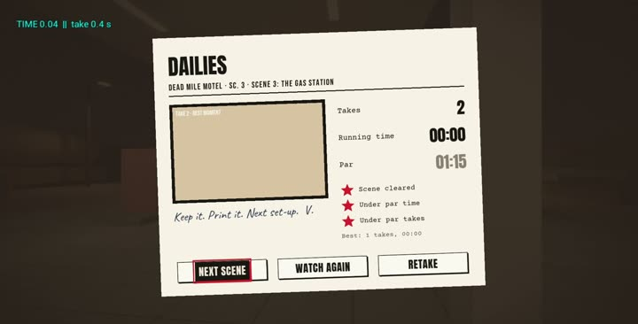
Scene cleared. The dailies card comes up and PRINT IT! stamps the corner.
CUT! Take two. Print it. Day 1, hour 9

Take one, rolling. These two zombies are the new bodies from the NPC session, not mannequins.
CUT! Take two. Print it. Day 1, hour 9

The CUT card, from the UI session's rebuild of the Claude Design mockup.
CUT! Take two. Print it. Day 1, hour 9

Dailies: takes, running time against par, three stars, and NEXT SCENE, WATCH AGAIN or RETAKE.
CUT! Take two. Print it. Day 1, hour 9

Take one of Dead Mile Motel. The clapperboard drops in, the Director calls the scene, and the HUD stays: scene card top left, a film-strip timecode along the bottom.
An hour later: a slate, a HUD and ACTION! Day 1, hour 8

The run moves on to the next film. The forecourt cuts to the slate for Saucers Over Millbrook, the Director calls ACTION, and the ray gun HUD takes over.
An hour later: a slate, a HUD and ACTION! Day 1, hour 8

The slate. Film title, scene, take, and the Director's subtitle underneath.
An hour later: a slate, a HUD and ACTION! Day 1, hour 8

Saucers Over Millbrook. The HUD picks up the ray gun's ammo count, bottom right.
An hour later: a slate, a HUD and ACTION! Day 1, hour 8

The enemy test map: zombies on the left, aliens in the middle, noir men in suits and hats on the right. The yellow lines and floating labels are debug drawing.
An hour later: a slate, a HUD and ACTION! Day 1, hour 8

The noir set, a jazz club, in black and white with film grain. The exposure is blown out at the edges; that's on the fix list.
Thirteen stills of the game so far: five usable, eight broken Day 1, hour 7

The ray gun firing. The bolt is a real object that crawls when time is slow.
Thirteen stills of the game so far: five usable, eight broken Day 1, hour 7
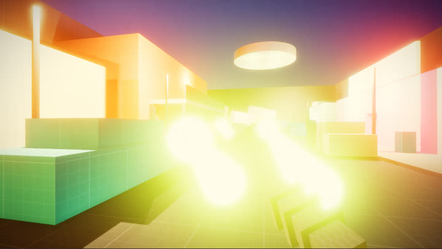
Two bolts in the air. The glow washes out half the screen, which is also on the list.
Thirteen stills of the game so far: five usable, eight broken Day 1, hour 7

The zombie set with the machete and two shamblers. No grindhouse look in play yet; that is on the list too.
Thirteen stills of the game so far: five usable, eight broken Day 1, hour 7

The UFO set, "Saucers Over Millbrook", in its 1950s Technicolor look. The stack of boxes at the bottom is the ray gun.
Thirteen stills of the game so far: five usable, eight broken Day 1, hour 7
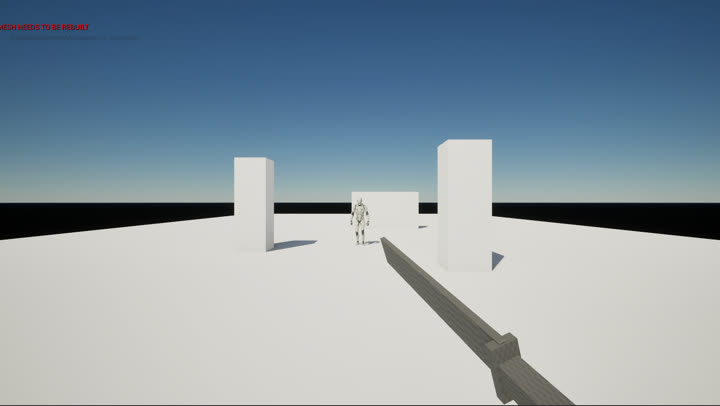
The enemy test map: one enemy, and Unreal's red warning that the nav mesh needs rebuilding.
Thirteen stills of the game so far: five usable, eight broken Day 1, hour 7

The stall on a timeline. No commits from 08:26 to 10:20, and the 09:30 filming block fell in the middle.
The crew hit the usage limit and went dark for two hours Day 1, hour 6

Seven seconds of the first replay with kills. The figure is the player, replayed as a puppet. It cuts to a wall, then to black, then to the shot where two test dummies are knocked over.
The first replay is a rough cut Day 1, hour 4

Me, from outside. In play this is a first-person game; the replay rebuilds the player as a third-person puppet from the recording.
The first replay is a rough cut Day 1, hour 4

The kill shot: both dummy boxes tipping over, seen from a camera mark across the stage.
The first replay is a rough cut Day 1, hour 4

A shambler spawns 7 metres out, walks in, tells, and hop-lunges into the camera. Then a fresh one takes a debug hit and ragdolls away.
The first zombie walks, lunges and ragdolls Day 1, hour 3

The approach. The yellow ring and the label over its head are debug drawing.
The first zombie walks, lunges and ragdolls Day 1, hour 3

The lunge, from the receiving end.
The first zombie walks, lunges and ragdolls Day 1, hour 3
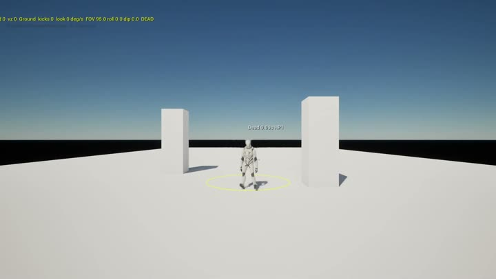
One hit: the ragdoll is thrown the way the hit was going.
The first zombie walks, lunges and ragdolls Day 1, hour 3

Five seconds on the soundstage: run, slide under the lintel, run at the checker wall, jump, kick off it. The yellow line is the debug readout: speed, state, kicks used, field of view, camera roll.
Run, slide, wall kick: the player moves Day 1, hour 3
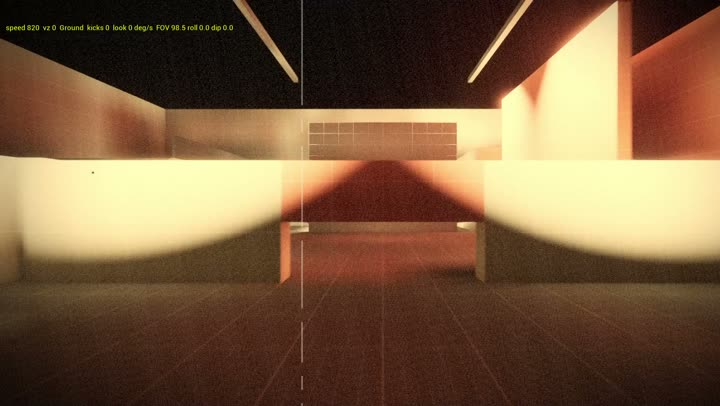
Mid-slide under the lintel. The field of view widens and the camera rolls into the slide.
Run, slide, wall kick: the player moves Day 1, hour 3

Full run at the checker wall the demo spawns, 8.2 metres a second.
Run, slide, wall kick: the player moves Day 1, hour 3

Just after the kick. The camera rolls away from the wall, then settles.
Run, slide, wall kick: the player moves Day 1, hour 3

Saucers Over Millbrook, Scene 4: a fly up the main street, past the parked cars to the crashed saucer, then up to the one still hovering.
Two more sets, and one that built itself three times Day 1, hour 3

Dead Mile Motel, Scene 3: from the player start, up the road under the pump canopy, to the shop door and over the roof.
Two more sets, and one that built itself three times Day 1, hour 3

Where the player starts. Pastel shopfronts, staggered cars for cover, the crashed saucer closing the far end and a second one overhead.
Two more sets, and one that built itself three times Day 1, hour 3

The wide camera mark. The hotel balcony on the left is where two enemies will shoot down the street.
Two more sets, and one that built itself three times Day 1, hour 3

The overhead mark. The red disc by the pink diner is the mark the player finishes on.
Two more sets, and one that built itself three times Day 1, hour 3

The player start. Four red pump placeholders under the canopy, the shop door lit behind them.
Two more sets, and one that built itself three times Day 1, hour 3

The low camera mark, at floor level among the pumps.
Two more sets, and one that built itself three times Day 1, hour 3

The overhead mark, which mostly films the top of the canopy. It needs moving.
Two more sets, and one that built itself three times Day 1, hour 3

I ran the UI brief through Claude Design and got a style tile, a logo, a component sheet and 15 screens. Menus are call sheets, the pause screen is a slate that says HOLD.
The look arrives: production paperwork, in 19 artboards Day 1, hour 2

HUD mockup for the zombie film: orange accents, shells for ammo.
The look arrives: production paperwork, in 19 artboards Day 1, hour 2

HUD mockup for the 50s alien film: teal and pink, plasma cells.
The look arrives: production paperwork, in 19 artboards Day 1, hour 2
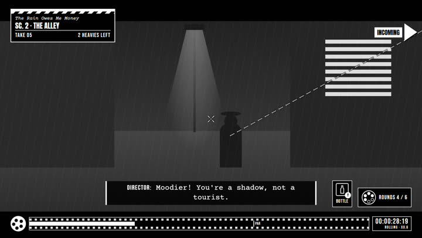
HUD mockup for the noir film: black and white only, so warnings rely on shape and brightness.
The look arrives: production paperwork, in 19 artboards Day 1, hour 2
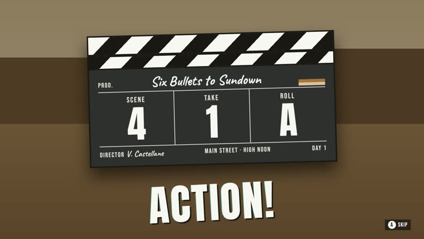
Scene start: the slate, then ACTION!
The look arrives: production paperwork, in 19 artboards Day 1, hour 2

One hit: CUT! and the take number rolls over. The whole beat is under a second.
The look arrives: production paperwork, in 19 artboards Day 1, hour 2
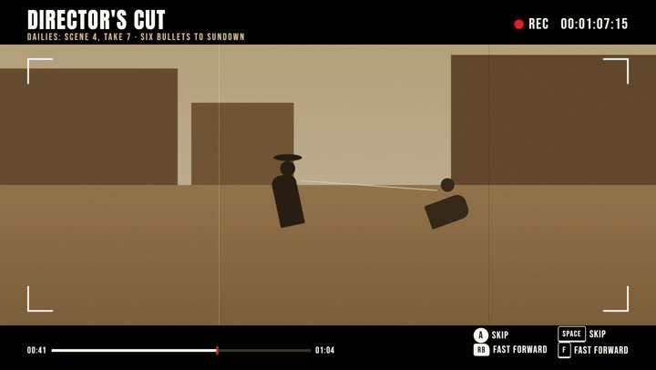
The director's cut replay overlay, with skip and fast forward.
The look arrives: production paperwork, in 19 artboards Day 1, hour 2

The dailies card after a scene: takes, time against par, stars.
The look arrives: production paperwork, in 19 artboards Day 1, hour 2

Level select as a shooting schedule.
The look arrives: production paperwork, in 19 artboards Day 1, hour 2

The pause screen: HOLD.
The look arrives: production paperwork, in 19 artboards Day 1, hour 2
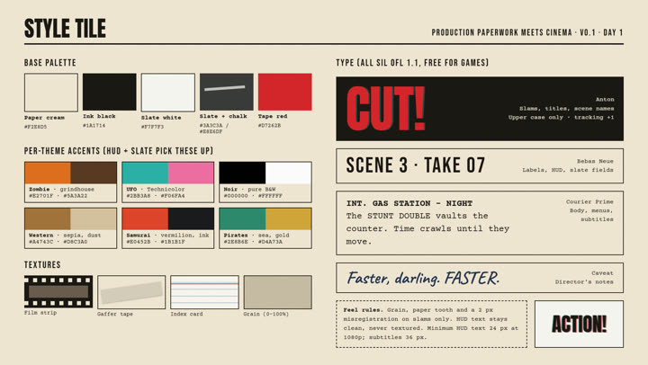
The style tile: paper cream, ink black, tape red, and a pair of accent colours for each film genre.
The look arrives: production paperwork, in 19 artboards Day 1, hour 2

Three logo directions. A was chosen: the doubled E of REEL as a frame of film.
The look arrives: production paperwork, in 19 artboards Day 1, hour 2

Pass one of the grindhouse look on the screen-test set: grain, scratches, a vignette, frame jitter and a warm cast.
The first set, and a film look that won't hold still Day 1, hour 2

Before: The same camera with the look off and on. Whites go cream, reds go orange, the corners darken.
The first set, and a film look that won't hold still Day 1, hour 2

After: The same camera with the look off and on. Whites go cream, reds go orange, the corners darken.
The first set, and a film look that won't hold still Day 1, hour 2

Wide mark. Rendered offscreen without auto exposure, so it's much darker than the game view.
The first set, and a film look that won't hold still Day 1, hour 2

Low mark, at floor level, looking at the slide wall and its red lintel.
The first set, and a film look that won't hold still Day 1, hour 2
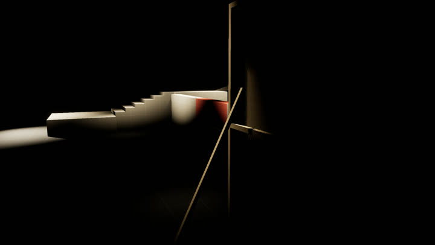
Side mark, blocked. The camera sits right behind the plywood flat.
The first set, and a film look that won't hold still Day 1, hour 2

Three cuts from the Engine session's test clip: walk to the cylinder, turn, walk the wall. The input is scripted.
First footage, and the take that filmed the wrong window Day 1, hour 2

The Engine session's first task: six checks, two with caveats.
First footage, and the take that filmed the wrong window Day 1, hour 2

The template arena, from the clean take. The real soundstage greybox is being built now.
First footage, and the take that filmed the wrong window Day 1, hour 2

The first milestone landed at 06:08, 68 minutes into the jam. Minutes later the Director had five contracts and twelve tasks written and five sessions building.
Pitch locked: Reel Time, nearly three hours early Day 1, hour 2

The first twelve tasks, by session. Movement and time are first because moving is what runs time.
Pitch locked: Reel Time, nearly three hours early Day 1, hour 2

Task T-0005, trimmed. Anything a player can see needs a still and a clip before it can go to review.
Pitch locked: Reel Time, nearly three hours early Day 1, hour 2
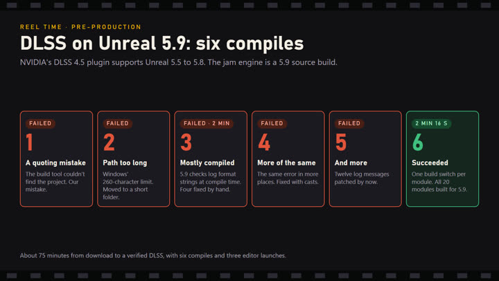
Six compile attempts. The first two failures were ours, the next three were one Unreal 5.9 change, and the sixth passed.
Porting NVIDIA DLSS from Unreal 5.8 to 5.9 in 75 minutes Day 1, hour 2

Three compiles of hand patches, then the switch Unreal 5.9 provides for exactly this.
Porting NVIDIA DLSS from Unreal 5.8 to 5.9 in 75 minutes Day 1, hour 2

Launch one was blocked by a version label, launch two crashed on the first frame, launch three came up clean with DLSS only.
Porting NVIDIA DLSS from Unreal 5.8 to 5.9 in 75 minutes Day 1, hour 2

What the DLSS plugin reported when asked directly through the editor's MCP tools.
Porting NVIDIA DLSS from Unreal 5.8 to 5.9 in 75 minutes Day 1, hour 2

Two evenings of setup before the jam: a crew of Claude Code sessions, a smoke test that found 11 problems, the rules, the theme reveal and a Q&A. No game.
Pre-production: everything that existed before the clock Day 1, hour 1

Two evenings of setup, then the clock. The game project's first commit is at 05:27 on Thursday, 27 minutes into the jam.
Pre-production: everything that existed before the clock Day 1, hour 1

Who talks to whom. Every arrow is a file dropped in an inbox folder.
Pre-production: everything that existed before the clock Day 1, hour 1

A task's journey, from a request to something a player can see.
Pre-production: everything that existed before the clock Day 1, hour 1

Eight of the eleven problems from the smoke test on Tuesday 10 November.
Pre-production: everything that existed before the clock Day 1, hour 1